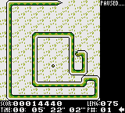
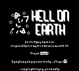
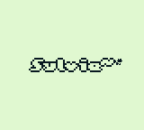

homebrew
games for now obsolete hardwaresnek-gbc

i dont remember if i died or closed BGB, probably died
Snek! is my first 'released' project. it supports DMG, SGB and CGB.feedback was generally positive.
project cancelled.
github itch.io homebrew hub
hell-gbc

okay, this isnt actually a screenshot..
i got nerd sniped and participated in the mvm19 game jam.i was actually doing rather well, but things still didnt go as planned
feedback also generally positive.
common feature request: running.
project fate unknown.
github itch.io
misc
everything elsesgb-speedtest
test ROM for checking the lowest speed an SGB can process packets, down to a cycle, using RAM code.as it turns out, SGB can handle the fastest possible transfer, fortunately i only spent a day making that!
github
custom dmg bootrom

feat. one (1) free byte remaining
this file has high compatiblity with the real dmg bootrom, is ~4 times faster,
and is written from scratch using only BGB HLE bootroms as a reference.header checksum is performed, logo is only checkesummed(1) to determine whether to display the bootrom logo or the cart logo (2)
if you want to replace the logo in the bootrom, its at 0x41 (gbl), and the cat is at 0x71 (1bpp).
binary source
gblc
converts 1bpp into game boy logo format, not much else i can saypage
katakis 3d GBS rip
katakis 3d is a game boy color game that didnt get released, the binary got uploaded online by a developer, and.. suprisingly, no one gbs-ripped it for a while....untill i decided to open up bgb and play some katakis 3d, and then decided i want a .gbs of it
tagged by zumi (blog post)
binary
this site!
using the little bit of html, css and js i already knew, and lots of googling + console.it is a bit of a pain to work on at times, when i cant even reasonably test some things, but i do tend to have fun making this
some things here have a title defined, but due to a11y(3) some of them became text and footnotes, some still remains :3
page github
footnotes
(1) 8 bit checksum, ie. every 256th logo is detected as the nintendo logo
(2) display the on-cart logo if its custom, bootrom logo otherwise
(3) accessibility